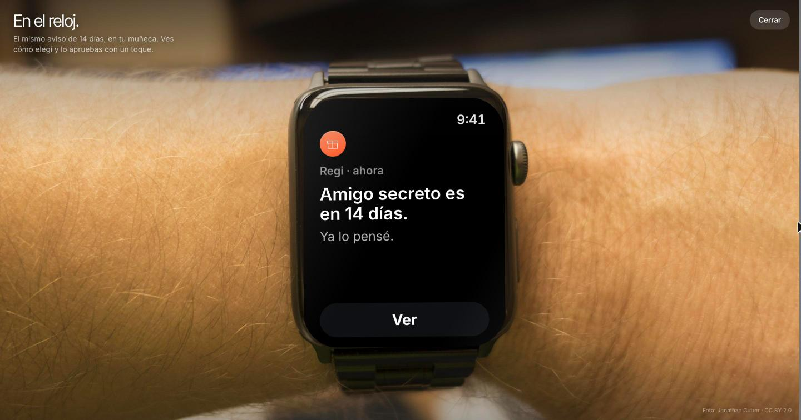

Propuesta conceptual para Creado en Chile
Proceso de diseño
Diagnóstico
Cómo se regala hoy con Creado
Definición
El problema, acotado
Oportunidad
Dónde un sistema puede ayudar
Arquitectura
El sistema, sus agentes y su lógica
Validación
Usuarios sintéticos que lo ponen a prueba
Iteración
Lo que aprendimos y lo que sigue
Proceso del taller
Agosto → noviembre. Cada etapa cambió por una corrección.
Terreno en tiendas
Corrección: [CORRECCIÓN]
Exploración sugerida
Corrección: el problema era demasiado amplio; había que acotarlo.
Suscripción "Regalar con calma"
Corrección: el valor no está en cobrar, sino en proponer a tiempo.
Asistente de regalos
Corrección (3 nov): debe ser un planner, no un shopper.
Planner
Corrección del montaje: más identidad humana, menos frases invasivas.
REGI
Nombre, valores y esta propuesta para la comisión.
Lo que Creado ya hace bien
Curaduría de diseño chileno
Cientos de creadores locales seleccionados, desde 2014.
Regalos en 3 horas
Despacho express en Santiago.
Pensado para regalar
Guía de regalos, filtros por precio y para quién, bolsa de regalo.
Ocho tiendas físicas
Santiago, Valparaíso y Zapallar.
Compra en cuotas
Sin interés.
Diagnóstico inicial
El cuello de botella
Regalar depende de que la persona se acuerde a tiempo, busque y decida sola.
Citas de terreno
El problema
El problema ocurre cuando las fechas importantes llegan sin aviso y elegir un regalo exige tiempo que la persona no tiene: compra con estrés, a última hora o fuera de Creado.
Usuarios
| Perfil | Dolor principal | Necesidad clave |
|---|---|---|
 Marcela, 58La que quiere, pero no alcanza Marcela, 58La que quiere, pero no alcanza | “Me encanta regalar cosas bonitas, pero siempre me pilla el tiempo.” | Que le avisen con tiempo y le propongan algo bonito. |
 Andrés, 52El que delega Andrés, 52El que delega | “Yo pongo la plata, pero que lo vea otro.” | Delegar sin tener que revisar cada detalle. |
 Felipe, 34Se le pasa la fecha Felipe, 34Se le pasa la fecha | “Es hoy y no tengo nada, ¿qué hago?” | Que lo rescaten a tiempo, aunque sea el mismo día. |
La decisión que reencuadró el proyecto
Exploración sugerida en tienda
Problema amplio
Un planner que se anticipa a las fechas
Problema acotado
Corrección del 3 de noviembre: planner, no shopper. Dejamos de vender en la tienda para ordenar el año de regalos.
¿Nuestra oportunidad?
Pasar de una tienda donde vas a buscar, a un sistema que conoce tus fechas y te propone a tiempo desde el catálogo de Creado.
Hipótesis
Si el sistema conoce las fechas y gustos de las personas y propone a tiempo, la compra se adelanta, se repite y se hace en Creado.
Arquitectura del sistema
Entradas
Motor · 6 agentes
Salidas
Capas técnicas y stack
Ya funciona en el prototipo
Mapa de flujo
Lógica de decisión
Escalada según los días
Indicaciones de los agentes
4 · Curador
- Solo productos del catálogo de Creado.
- Respeta el presupuesto o tope de la ocasión.
- Justifica cada propuesta con lo que sabe de la persona.
- Considera stock y tiempo de despacho a la fecha.
- No repite regalos ya dados a esa persona.
- No inventa datos: si falta información, pregunta.
{ persona, ocasión, opciones: [1–3], elegida, porqué, llega_antes_de }
Decisiones de diseño
De suscripción con cobro a servicio que propone a tiempo
El valor está en llegar antes de la fecha, no en pagar por adelantado.
De shopper a planner
La esencia es ordenar el año de regalos, no empujar a comprar.
De preguntar todo a aprender de lo que conectas
Fechas, personas y gustos salen del calendario, el correo y los contactos.
De niveles fijos a autonomía según importancia
Si el regalo importa más, muestra 3 opciones; si no, elige solo y avisa.
De tienda con pantallas al celular como guía
El aviso llega al entrar y el celular lleva al regalo.
Omnicanalidad



Usuarios sintéticos
Marcela, 58La que quiere, pero no alcanzaValida: si REGI propone bien, algo bonito y con sentido para cada persona.
Métrica clave: Acierto.
Andrés, 52El que delegaValida: si puede delegar sin revisar cada detalle.
Métrica clave: Esfuerzo.
Felipe, 34Se le pasa la fechaValida: si REGI lo rescata a tiempo, incluso el mismo día.
Métrica clave: Anticipación.
Validación
| Métrica (1–5) | Marcela | Andrés | Felipe |
|---|---|---|---|
| Acierto | — | — | — |
| Anticipación | — | — | — |
| Esfuerzo | — | — | — |
| Confianza | — | — | — |
| Promedio | — | — | — |
Puntajes pendientes: se completan al correr la validación con los agentes.
Edge cases
Aprendizajes y a futuro
El valor no es automatizar el regalo, es quitar el estrés sin quitarle la decisión a la persona.
Aprendizajes
Los conectores reemplazan los formularios: preguntar menos es diseñar mejor.
La autonomía se gana: el sistema aprende de cada decisión.
Las frases importan: “se acuerda por ti” se sentía invasivo.
Limitaciones
Fechas, conectores y compras son simulados en el prototipo.
La validación es con usuarios sintéticos, aún no con clientes reales.
Sin integración real con Shopify ni stock en vivo.
A futuro
Piloto con clientes de Creado.
Integración con Shopify, stock y despacho en tiempo real.
Medir si la compra realmente se adelanta y se repite.